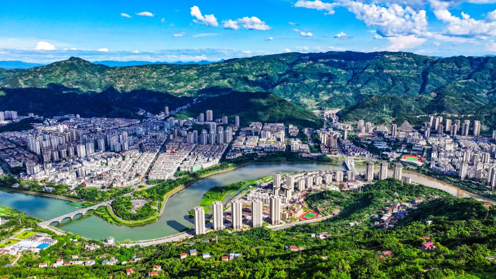

山水开州 文旅之城
开州地处重庆东北部、三峡库区腹心，是联通渝东北与川东北的重要节点。汉丰湖串联起“城在湖中、湖在城中”的独特景观，湖湾湿地与滨湖夜景相映成趣。这里既有刘伯承同志纪念馆承载的红色记忆，也有雪宝山等山水生态资源可供徒步休闲。再加上冰薄月饼、开州春橙与湖鲜鱼宴等地道风味，形成了可赏景、可研学、可品味的立体文旅体验。
开州亮点
精选景区入口
开州味道入口
冰薄月饼
皮薄馅细、层次分明，甜而不腻，承载着开州传统糕点工艺与节令记忆。
开州春橙
果香清新、汁水丰盈，酸甜平衡，是三峡库区生态果品的代表性名片之一。
湖鲜鱼宴
依托水域资源打造多样鱼鲜做法，鲜香兼具本地风味，体现湖城饮食文化特色。
简短旅游路线
一日游：汉丰湖 → 举子园 → 刘伯承同志纪念馆 → 滨湖夜景
查看景区介绍